Masters
I completed my Master's degree in Physics at the University of Leipzig, specializing heavily in computational physics. The curriculum included advanced statistical physics and soft matter physics, before narrowing into a deep focus on computational methods, covering a wide variety of Monte Carlo simulations, molecular dynamics, protein folding, and most extensively the Ising model. This involved implementing multiple algorithms such as single spin flips and cluster algorithms, primarily in C++ for computational performance, with Python used for visualization and analysis. Optimizing the code was essential, as the precision required demanded an enormous number of simulations.
For my thesis, I worked with the university's large-scale computing cluster, running simulations via SSH and managing jobs across a distributed server environment. This gave me practical experience with high-performance computing infrastructure alongside the physics and machine learning work itself.
My thesis focused on applying convolutional neural networks to super-resolve Ising model spin configurations, training a network to reverse a renormalization procedure and reconstruct larger system sizes from smaller ones. This allowed computationally expensive large-scale simulations to be approximated by running smaller ones and scaling up their properties using AI. The work extended an existing method from the literature into the three-dimensional case and investigated finite size effects, combining statistical physics, Monte Carlo methods, and deep learning into a unified computational framework.

View on GitHubSuper-resolving a 2D Ising spin configuration at critical Temperature with a Convolutional Neural Network